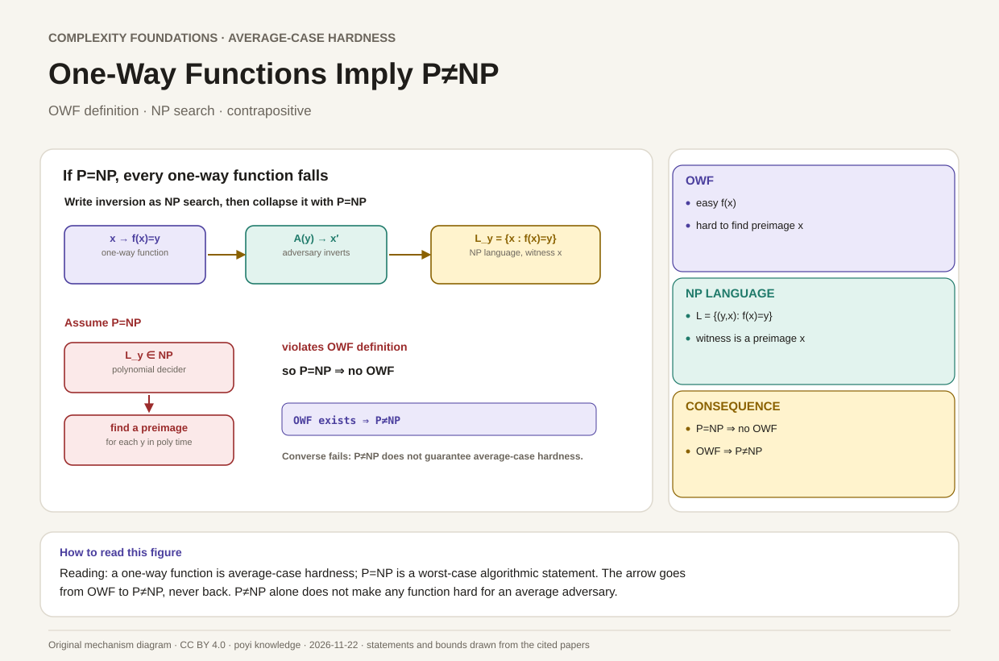
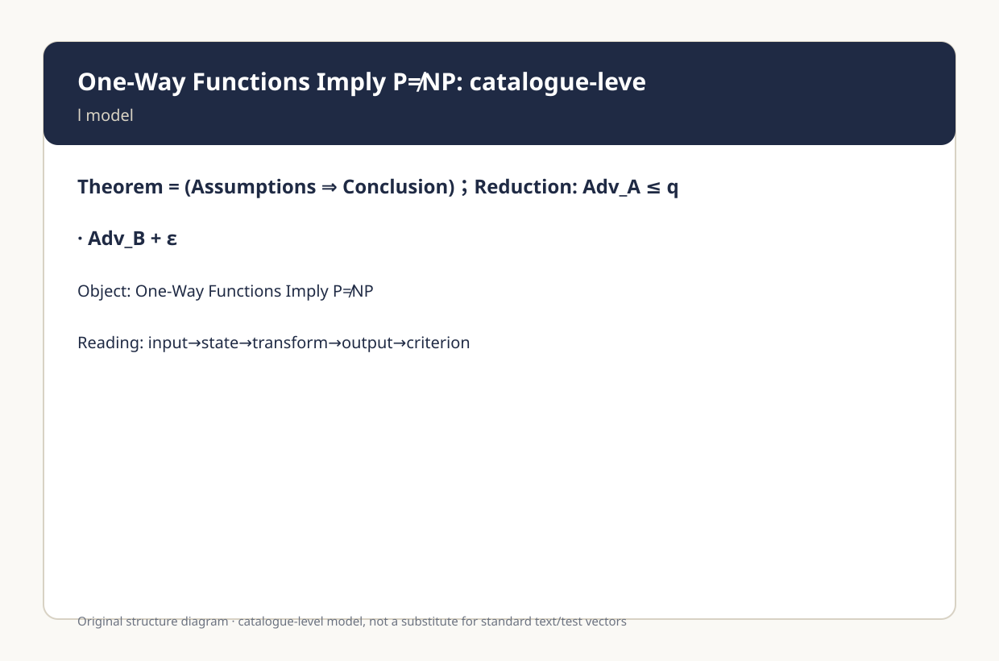

Principles
Theorem: One-Way Functions Imply P≠NP (单向函数蕴含 P≠NP). ### One-way functions
A one-way function f: {0,1}* → {0,1}* requires a polynomial-time algorithm for f(x), but for every probabilistic polynomial-time adversary A, given y=f(x) for x sampled from a distribution, the probability that A outputs a preimage x′ with f(x′)=y is negligible. The hardness is average-case, not a single worst-case instance. ### Writing inversion as an NP language
L_y = { x : f(x) = y }. x is a membership witness: given x, verifying f(x)=y takes one polynomial-time evaluation. Hence L_y is in NP. If P=NP, a polynomial-time decider for L_y exists; for each y it can find a preimage in polynomial time (or decide that none exists). That directly contradicts the definition of a one-way function. ### The contrapositive
Therefore P=NP ⇒ no one-way function exists; equivalently, a one-way function exists ⇒ P≠NP. The proof uses only “P=NP solves NP search” and says nothing about the converse from P≠NP to a one-way function.

Why it matters
It connects cryptography’s minimal assumption to complexity theory’s biggest open problem: if P=NP one day, it is not just a particular structure in RSA or AES that breaks; every one-way function whose security relies on average-case inversion hardness becomes insecure.
P≠NP says that some NP problem is hard in the worst case; it does not say that an average-case hard function exists. Cryptography needs random instances to be hard, not the existence of one hard instance. P≠NP is necessary, not sufficient.
A cryptographic construction cannot cite “P≠NP, therefore secure”. Security must be reduced to a concrete one-way function, pseudorandom generator or lattice assumption with an explicit adversary-advantage bound.
Applications
- Textbooks use this implication to explain why one-way functions are cryptography’s minimal hardness assumption. 2. In a security proof, a construction from one-way functions indirectly depends on P≠NP, but the proof still has to supply the concrete reduction. 3. In complexity teaching, it turns inversion into NP search and is the standard example of an NP witness and search complexity. 4. As a negative result, it says that any P=NP algorithm breaks all OWFs, not just one scheme.
It cannot justify a concrete key length, and it cannot prove that a particular function is one-way. The existence of one-way functions remains an unproven assumption.

Limits & attacks
P≠NP does not imply that a one-way function exists. An NP problem can be worst-case hard while almost all instances are easy; cryptography needs average-case hardness. Impagliazzo’s “five worlds” makes the gap explicit: in Pessiland, P≠NP but no one-way functions exist.
- Quantum adversaries: quantum algorithms can break the specific OWFs behind RSA/ECC, but “OWF ⇒ P≠NP” remains a classical complexity statement. 2. Non-uniform adversaries: circuit complexity and non-uniform security need a different set of assumptions. 3. Distribution dependence: an OWF’s hardness depends on the input distribution; a function that is easy on some distribution is not an OWF. 4. Worst-case to average-case bridges: constructing an OWF from a worst-case hard problem usually needs an additional reduction. 5. Proof technique: P≠NP itself is unproven, so the implication is conditional, not an established existence theorem.
The implication is a logical relation, not a security proof. It says “P=NP would destroy OWFs”; it does not say “P≠NP is enough to build OWFs”.
History
Diffie and Hellman made one-way functions a conceptual foundation of public-key cryptography in 1976. Goldreich’s Foundations of Cryptography formalised the definition and the distinction between average-case hardness and worst-case complexity.
Katz and Lindell’s Introduction to Modern Cryptography starts from OWFs and uses “if P=NP, no OWF exists” to connect cryptographic assumptions with complexity theory. The statement appears as an exercise or lemma, not as a full solution to P versus NP.
Worked example & verification
Formal model and reproduction steps
[\Pr[\mathrm{Bad}_A(\lambda)]\le \varepsilon(\lambda)]
One-Way Functions Imply P≠NP: the registered public parameters, key material or randomness, and message are mapped through the stated transformation to an output checked against the registered criterion. The worked example is a structural reproduction, not a new test vector; parameter ranges, standard versions and implementation details remain source-bound.
References
- Wikipedia search entry for 单向函数蕴含 P≠NP. https://zh.wikipedia.org/w/index.php?search=%E5%8D%95%E5%90%91%E5%87%BD%E6%95%B0%E8%95%B4%E5%90%AB%20P%E2%89%A0NP
- Handbook of Applied Cryptography (Menezes, van Oorschot, Vanstone). https://www.cacr.math.uwaterloo.ca/hac/